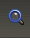

If the Consultant needed to copy over language data files to move the data to a new computer, then he/she would want to know the basic file structure of Wasta-Linux, and where to copy the data files from, in the hierarchical file system of Linux. For this you would need to know Nemo, but you will find it very much like the MS Windows Explorer utility in Windows. The new part is understanding just where the common data files might live on the system.
You should take time to become familiar with the following features of the File Manager which are illustrated and explained below:
Starting the File Manager
The File Manager is a computer program. You can launch the File Manager in order to explore and access your computer’s folders and files. It can be launched from either the launch bar on the panel or from the computer’s Main Menu. The panel’s launcher icon for this File Manager looks like this:
When you hold your mouse pointer over the folder icon in the launch bar it says, “Files”. Click once on this “Files” launch bar item to run the File Manager program.
The Nemo File Manager looks similar to this when it starts up:
The File Manager window has a number of important parts. At left is the Sidebar which lists the main locations on, or attached to your computer. When one of those locations is highlighted, the Contents Window will display what is at that location. There are different “views” of the information in the Sidebar and also different “views” of the items in the Contents Window - we will explain more about those views and the other parts of the File Manager below.
The Home Folder
The top-level folder on your computer is your Home folder. It is represented as an icon and the name “Home” that looks like this image shown above. The Home folder is listed as the first item in the Sidebar on the left side of the File Manager. All of your computer’s other folders and files are contained in your Home folder. When you highlight the Home folder by clicking the mouse pointer on it, the contents of your Home folder are shown in the right hand Contents Window of the File Manager.
The Default Folders
Within your Home folder there are several folders already provided for you as “default” folders. The default folders include the following: Desktop, Documents, Music, Pictures, Videos and Downloads. Each has a small icon or picture to the left of the name of the folder. These are listed under your Home folder within the File Manager like this:
You will notice that these default folders are also shown in the right side of the File Manager when you highlight your Home folder.
Folders that are automatically created by software programs
In addition to the default folders, your Home folder will also contain some other folders created automatically by some of the programs you use. For example, the Adapt It program creates a folder called “Adapt It Unicode Work” which looks like this:
The orange folder icon represents the folder. The name of the folder is to the right of the folder icon and in this case is “Adapt It Unicode Work”. A little wedge appears to the left of the folder icon which can be clicked to list the folder’s contents (see “Listing a folder’s contents” below).
The Paratext program creates a folder called “ParatextProjects” which looks like this:
It is important that you not move or make changes to these folders that Adapt It and Paratext create. Adapt It and Paratext will manage all the files and child folders that are located in these two folders. If you accidentally move a folder that a software program automatically creates, the program will likely not work, or the program won’t be able to find the data you previously created while running the program.
Undo any accidental changes
If you accidentally move or delete one of these folders, such as the ParatextProjects or AdaptIt folder, or a file or folder contained in one of these, you should immediately select Undo ... in the File Manager’s Edit menu (or use the Ctrl+Z shortcut) to Undo any accidental changes. If you have made any change to Adapt It’s or Paratext’s folders and cannot Undo those changes, you should “Restore” the folder you changed using the Wasta-Backup program’s Restore function.
Opening folders
You can use the File Manager to navigate around in the file system. You can open folders by doing one of the following actions:
- Double-click on the folder’s name when it is visible in the contents window.
- Highlighting the folder name with a single click of the mouse pointer, and pressing the Enter key. This way of opening a folder is easier for some people who find it difficult to do a double-click.
When the folder opens, the File Manager shows the contents of the opened folder displayed in the right side of the File Manager. If the folder is empty, the window on the right will also be empty.
Listing a folder’s contents (without opening the folder)
You can list the contents of a folder by clicking on the little right-pointing wedge that is shown next to the folder name:
Click on the right-pointing wedge to list the contents of the folder, without opening the folder. After clicking, the right-pointing wedge points downward to show that it is listing the folder’s contents (see picture below):
When the contents of a folder is listed, it may show other “child” folders. By clicking on the wedge next to each child folder you can see the contents of each new child folder, which may contain more folders or files. In the illustration at left the “Computer_Information” folder lists a folder called “Folders and Files Illustration” which lists a “Pictures” folder, which lists a “Bill Martin-Family” folder, which lists a “Bill” folder which just contains a picture file called “Bill.jpg”. If a folder is empty its list of contents will say “(Empty)”.
Child folders and parent folders
A folder may contain one or more “child” folders (see illustration above). The folder that contains the child folders is called the “parent” folder. Child folders may also contain more child folders
(grand-children), and so on. Any folder may also contain other kinds of files along with “child” folders.
The Navigation Path
Note that the path that you have followed to get to the currently open folder is shown at the top of the File Manager. For example, after navigating to and opening the Computer_Information folder, the path to this folder will appear at the top of the File Manager in the toolbar as this example shows:
The right part of the above picture shows the navigation path you used to get to the opened Computer_Information folder, displaying the path from left to right. The path shows that you started navigating from the Home folder and into the Documents folder, and finally into the Computer_Information folder. Since the Computer_Information folder is the currently open folder (with its contents showing in the right side of the File Manager), it is highlighted in the path shown above.
Look at the left end of the above illustration. You see some arrows and other symbols. You can see what they are for by holding the mouse pointer over them. A tooltip will appear with a short description of the tool. Here is what those arrows and symbols do if you click on them:
| Button/Symbol |
Button/Symbol Function |
|
Go to the previous visited location |
|
Go to the next visited location (grayed out if there is no next location recently visited) |
|
Go to parent folder |
|
Reload the current location |
|
Go to Home Directory |
|
Go to Computer |
|
Show more of the path to the left (when window is too small to show entire path) |
|
Show more of the path to the right (when window is too small to show entire path) |
As you navigate around to different child or parent folders the path displayed at the top of the File Manager will highlight the currently open folder, and that folder’s contents will appear in the right-hand part of the File Manager.
Directly displaying the contents of files
Such as documents, pictures or video files from within the File Manager
When the File Manager lists or shows the name of a file such as a document, a picture, or a video, you can usually cause that file to be opened by a program that knows how to open or display it – right from within the File Manager. Basically, you can open these types of files the same way that you can open a folder from within the File Manager by doing one the following:
- Double-click on the file’s name. For example, the “Jason and Anne.JPG” file illustrated in the picture below can be double-clicked to open that picture file.
- Highlighting the picture file name with a single click of the mouse pointer, and pressing the Enter key. This calls up a program that opens the picture file and displays it to you. This way of opening a file is easier for some people who find it difficult to double-click.
The types of files that can be opened or displayed this way include
.jpg, .png, .txt, .odt, .doc, .htm, .html and some other types. If the file does not open or does not display well using the above techniques, you may need to open the file within the program that created it.
Note: You should not try to open .xml adaptation documents that are stored within an Adapt It project’s “Adaptations” folder using the above techniques. The files may be displayed, but they won’t make much sense. They should be opened instead from within the Adapt It program.
Showing the contents of a USB Flash Drive
The Nemo File Manager also shows any external devices that are plugged into your computer. The File Manager may automatically open when an external disk is plugged into your computer. If it doesn’t automatically open you can open it using the “Files” launcher in the launch bar. When you plug in your flash drive for making backups, it will appear in the File Manager like this:
In the picture above the device that is plugged in is named “USB_BACKUP”. You can click on the device name to cause File Manager to show the contents of the device in the right hand File Manager window. The little icon to the right of a plugged in device:
as shown above is the “Safely Remove” button. Before unplugging any USB device that stores information, you should always click on this “Safely Remove button. If the computer is busy writing information to the device, it will tell you to wait until it is finished. If you have opened a file on the USB drive, you should close it before clicking on the “Safely Remove” icon.
When the device disappears, after clicking on it you know it is safe to remove the USB device.
Copying folders or files - the safe way
There are times when you may want to copy folders or files to a different location, either on your own computer, or to an external USB flash drive.
To copy a folder or file do the following actions:
- Open the File Manager (“Files”) and navigate to the folder or file that you want to copy.
- Click once on the name of the folder or file to highlight it.
- Click on the File Manager’s “Edit” menu, and select the “Copy” menu item (or use the Ctrl+C shortcut). This makes a copy of the folder or file in the computer’s memory (clipboard).
- Plug in the USB device if the copy is to be made to that device.
- Navigate to the destination folder or device that is to receive the copy. It it is a folder double click on it to open the folder. If it is a device, select the device in the Devices group of the File Manager, and navigate to an appropriate folder on that device, and double click it to open it (you can create a new folder on that device if needed - see below).
- Click on the Edit menu to open it, and select the “Paste” menu item (or use Ctrl+V shortcut). The folder or file will be copied into the destination folder. Since you have done a copy operation the folder or file will now exist in both its original location and in the destination location. There are other ways to copy folders or files, but those are more dangerous, so I will not describe them in this document.
Creating, renaming, deleting or moving folders (and files)
Creating a new folder
You can create new folders to keep your documents, pictures, videos, and other data organized. Folders can be created inside of other folders. To create a folder, do the following actions:
- Open the File Manager (“Files”) and decide where to create the new folder. You will create a new folder inside of some existing “parent” folder. Often you will create a new folder inside one of the default parent folders: Documents, Pictures, or Videos.
- Open the parent folder that will hold the new folder you are creating (see the “Opening Folders” section above).
- Click on the File Manager’s “File” menu, and select the “Create New Folder” menu item. A new folder edit box opens that has the name “Untitled Folder” highlighted in the edit box. Type the name you want the new folder to have overwriting the “Untitled Folder” name, and press Enter when done. If the name turns out to be wrong you can rename it (see below).
Renaming a folder (or file)
To rename an existing folder or file, do the following actions:
- Open the File Manager (“Files”) and navigate to the folder or file whose name you want to change.
- Click once on the name of the folder or file to highlight it.
- Click on the File Manager’s “Edit” menu, and select the “Rename” menu item. An edit box opens over the existing folder or file with the existing name highlighted in the edit box. Type the name you want the new folder or file to have overwriting the existing name, and press Enter when done. If the name turns out to be wrong you can try renaming it again.
Deleting a folder (or file)
To delete a folder or file, do the following actions:
- Open the File Manager (“Files”) and navigate to the folder or file that you want to delete.
- Highlight the folder or file you want to delete.
- Pause and make sure that you really want to delete the folder or file.
- When you are sure you want to delete it, tap the Delete key - once only!
- When you use the Delete key to delete a folder or file inside the File Manager, the deleted item is normally moved to the Trash folder. See the next section for how to retrieve a deleted folder or file from the Trash.
Note: Be very careful with the Delete key as it is easy to accidentally delete a folder or a file that should be kept. If you cannot find a file in the location you expected it to be, check for it in the Trash bin.
How to retrieve a deleted folder (or file) from the Trash folder
- Open the File Manager (“Files”) and navigate to the Trash folder. The Trash folder is one of the default folders in the “My Computer” group locations - in the left side of the File Manager window.
- Highlight the Trash folder to display the folders and files that are currently in the Trash bin.
- Select the folder or file that you want to “restore” so that it is highlighted.
- Click on the “Restore Selected Items” button at the top of the File Manager window.
- The selected item will disappear from the Trash bin and be restored to its original location in the file system.
Moving a folder (or file) - the safe way
Much care needs to be taken when moving folders or files to different locations. You should only move folders and files that you have created
- such as documents, pictures and videos. You should not attempt to move folders or files that are automatically created by software programs such as Adapt It and Paratext.
To move a folder or a file do the following actions:
- Open the File Manager (“Files”) and navigate to the existing folder or file you want to move.
- Select the folder or file that you want to move so that it is highlighted.
- Open the Edit menu and select the “Cut” menu item (or use the Ctrl+X shortcut). The folder or item doesn’t immediately disappear, but its icon will look grayed out to indicate the cut item has been copied to the computer’s memory (clipboard).
- Navigate to the folder location where you want the folder or file to be moved to and make sure that destination folder is open by double clicking on it, or highlighting it and pressing the Enter key.
- While the destination folder is open, click on the Edit menu and select the “Paste” menu item (or use the Ctrl+V shortcut). The folder or file will now appear in the new destination location and will no longer appear in its original folder location - effectively moving it from the old location to the new location. This is the safest way to move a folder or file. There are other more dangerous ways to move folders and files, but I won’t describe those ways in this document.
Different Views of File Manager’s Data
The File Manager’s main window shows information about folders and files using different possible views of those folders and files. The different views can be changed if desired using some buttons or icons on the right end of the File Manager’s tool bar - near the top of its window. These buttons or icons can be used to change the view of your data as follows:
| Button/Symbol |
Button/Symbol Function |
|
Path / Location button This tool bar button acts like a toggle. Click it once to see the actual Linux file system location that is being pointed to in the File Manager. Click it again to go back to the normal state which shows a graphical picture of the path to the location being being pointed to in the File Manager. Hovering the mouse pointer over this button it says, “Use Location Entry”. |
|  |
Search button This tool bar button acts like a toggle. Click it once to open a special Search bar under the File Manager’s tool bar. You can then type a word or phrase and click Enter to search your computer for a file that matches the name you enter. You can enter just part of the name if you can’t remember the whole name. When the search results appear you can refine your search by having it search for certain file types or in certain locations. |
|
This sets the “Icon View” This tool bar button sets the view for the main window that displays files and folders in the File Manager, so that it shows only an icon and name representing the folder or file. In this view the folders and files are arranged in order in rows across the screen. This view doesn’t show any information about the folder’s contents or about a file’s size, type or date the file was modified. |
|
This sets the “List View” This tool bar button sets the view for the main window that displays files and folders in the File Manager, so that it shows folders and files in a vertical list with information about each file in columns to the right of the folder/file name. See “List View’s Information Column Headings and Sort Orders” section below for more information about this useful view. I suggest you use this view most of the time you have the File Manager open. |
|
This sets the “Compact View” It is like the “Icon View” above, but uses smaller icons, and arranges them in order within vertical columns. This view doesn’t show any information about the folder’s contents or about a file’s size, type or date the file was modified. |
Note: The last three buttons (the “view” buttons shown above), can also be selected from the File Manager’s View menu (near the bottom of the menu).
When the File Manager is set to “List View” (see above), the top of the main window displays this bar that is divided into 4 column headings: Name, Size, Type, and Date Modified. The header bar looks like this:
The “List View” is my recommended view since it gives the most information about the folders and files on your computer. See the above section called “Different Views of File Manager’s Data” for information about other possible “views” of your folders and files.
The headers you see in the image above only appear in the “List View”. This view displays some helpful information about the folders and files that are listed under the headings.
Sort orders in List View
Each list view header can determine the sort order of the folders and files listed below the headers. The sort order can be determined if you click directly on the header. For example, if you click on the “Name” header segment of the bar, the folders and files will be sorted in reverse alphabetical order (bottom of the alphabet at the top). If you click the “Name” header segment of the bar a second time, the folders and files will be sorted in normal alphabetical order (top of the alphabet at the top).
If you click on the “Size” header segment of the bar, the folders and files will be sorted according to their size, from smallest to largest. A second click on the “Size” segment will sort the folders and files from largest to smallest. If you want to view the files sorted by Name again rather than Size you can click on the “Name” segment of the header bar.
If you click on the “Type” header segment of the bar, the folders and files will be sorted according to their type - sorting them alphabetically by their extension. A second click on the “Type” header segment will reverse the order - but still using the extension to sort by rather than the name. If you want to view the files sorted by Name rather than by Type you can click on the “Name” segment of the header bar.
Finally, if you click on the “Date Modified” segment of the bar, the folders and files will be sorted according to the date they were last modified - from newest to oldest. A second click on the “Date Modified” header segment will reverse the order - from oldest to newest. Each additional click on “Date Modified” reverses the sort order by dates. If you want to view the files sorted by Name rather than by Date Modified you can click on the “Name” segment of the header bar.
The File Manager has a status bar at the bottom of its window. It looks like this:
The middle of the status bar tells how many items are in the File Manager’s main window, and how much free space in on our computer. The other items on the left and right sides of the status bar are described below:
| Button/Symbol |
Button/Symbol Function |
|
This is the status bar’s “Show Places” switch. When this button is pressed, the File Manager shows the list of places in the left part of its window (called the “Sidebar”). This list of places is grouped by categories with the default child folders of the Home directory in the top category called “My Computer”, followed by the group of “Devices”, and “Network” locations at the bottom. This is the recommended setting. This switch is automatically released if the “Show Treeview” button is pressed (see below). |
|
This is the status bar’s “Show Treeview” switch. When this button is pressed, the File Manager shows the the computer’s folders as a list in the left part of its window (called the “Sidebar”), with little wedge icons that allow you to click on them to see the contents of each folder without opening those folders. This treeview puts the Home folder at the top of the tree. This switch is automatically released if the “Show Places” button is pressed (see above). |
| or |
These two buttons control whether the left part of the File Manager window (called the Sidebar) is open (visible) or closed (hidden). The top button closes the Sidebar. The bottom button (which is visible only when the Sidebar is closed) opens the sidebar. The same actions have a shortcut which is the F9 key on the top row of keys of the keyboard. The F9key acts like a toggle, alternately closing and opening the Sidebar. |
|
This is a slider bar that can be used to adjust the zoom level. You can move the zoom setting pointer to the left to “zoom out” (making everything smaller so more items can be shown). Move the zoom setting pointer to the right to “zoom in” (making everything bigger which shows fewer items items but makes items easier to see). These settings can also be made on the File Manager’s View menu which also shows the shortcuts for these commands. The “Normal” zoom setting can be set by using Ctrl+0 (Ctrl+zero). |
There are many other settings and features that are available on the File Manager’s menus. The one’s described in this document are the main ones.
The actual name of the File Manager
Many Linux software programs have special names that the people who created the program have given to those programs. The special name of the File Manager we have described in this document is “Nemo”. There are actually a number of different File Managers that are available for Linux computers. We are using the one called “Nemo” on our Linux Mint computers. You can usually find the special name of nearly all Linux programs by running the program (usually from a menu or launcher) and then clicking on the program’s Help menu, and selecting the “About …” item on that menu. If we click on our File Manager’s Help menu and select “About” a window appears like below:
This “About” dialog tells us some information about the Nemo program. It gives us the current version of the program (1.8.3), a short description of what the program does, and a button that will display the open source license that ensures that Nemo remains a free program which can be freely distributed. When programmers fix bugs and add features they release new versions of a program – each newer version has a higher version number.
What is the version number of the Nemo program on your computer?